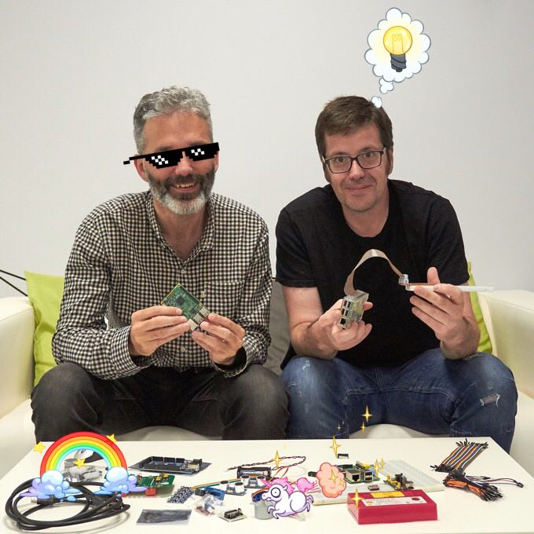

Controlando el mundo físico
con
Python
y
RaspberryPi
- Taller PyDay Galicia, 10 junio 2017 -
Miguel y Félix

mgesteiro
/
@felixgomezlopez
Índice
Introducción
Práctica inicial
Prácticas individuales
LED RGB
Servo
Fotoresistencia (LDR)
Detector de movimiento (PIR)
Sensor de distancia
Práctica común: Relé + Bot de Telegram
Cierre